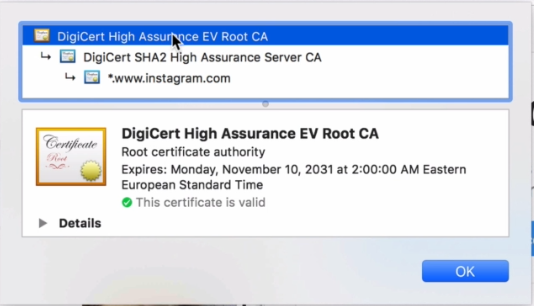
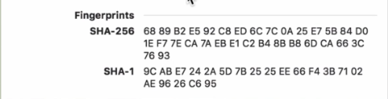
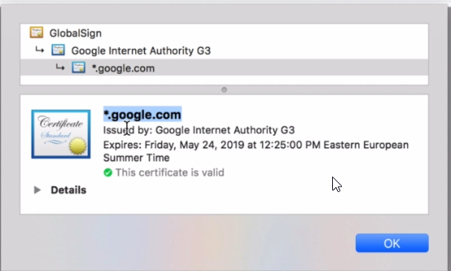
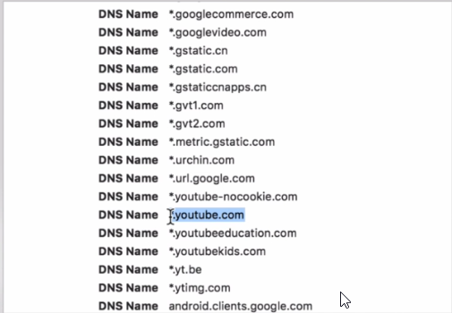
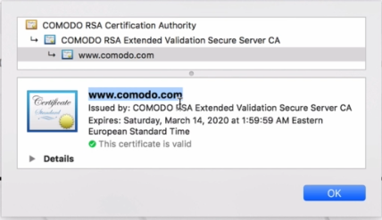
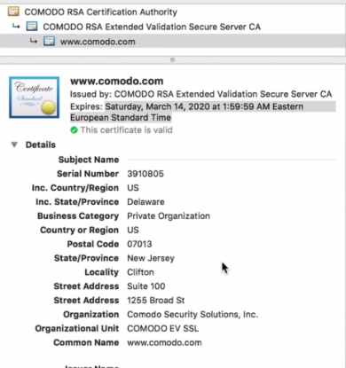
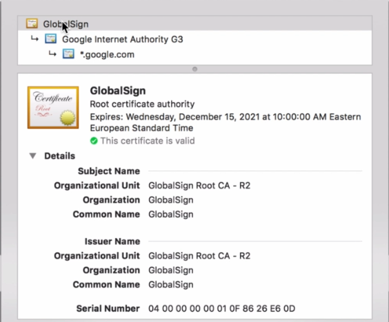
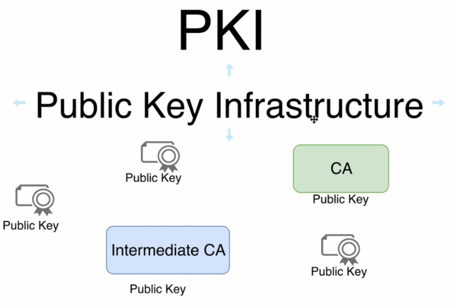

#openssl genrsa -aes256
-->passphrase will be used for and creation of private key
passphrase: hema
#openssl genrsa -aes256 -out private.pem
-->pem is extension that is used for all files that include the certificates and also we can use this extension for storage of private key
-->we can extract public key from private key
#openssl rsa -in private.pem -outform PEM -pubout -out public.pem
Enter pass phrase for private.pem: hema
------------------------------------------------------------
Exploring certificate of instagram

Root CA-->this certification authority doesn't usually issue certificate, it's considered as a root entity in the chain of trust
Intermediate CA or Server CA-->this intermediate CA has issued certificate for instagram.com

-->DigiCert SHA2 High Assurance Server CA first it hashes data with SHA-256 for integrity(to make sure data didn't mutated or changed) then encrypt hash with RSA Encryption to ensure authority(that instagram itself is send these data not website else and also to encrypt passwords or any sensitive data)

Encrypted Hash = Signature
-->you can use public key to encrypt data and send these encrypted data to any website like (instagram) and only using corresponding private key this data maybe decrypte, private key is of course kept secret and it's located on the servers that host pages for example (instagram)

-->you will find here DNS names for which this certificate is valid, it means that if you try to use this certificate on any other domain that is not listed here you'll get a certificate verification error and in this certificate you'll see only two DNS names
-->DNS Name here told us that this certificate was actually created only for a single domain www.instagram.com, it's look like wildcard certificate but in fact you will not see any other subdomains of this domain(www.instagram.com), usually subdomains used without www at the beginning

fingerprints-->are simply hashes of certificate and you can use those fingerprints to verify integrity of certificate
------------------------------------------------------------
google certificate

-->it was issued for google.com and for any subdomains


-->list of DNS names indicates websites where the certificate is allowed to be used
------------------------------------------------------------
Comodo certificate

-->we don't see any asterisks and that mean that this certificate is domain certificate not multi-domain

-->this called certificate with extended validation so more information is included here and more checks where performed by issuer of the certificate
Questions:
1-How web browsers trust Root CA??
2-How chain of trust is built?
3-When certificate is considered invalid?
------------------------------------------------------------
Questions
1-What is root CA??
2-How root CA looks like??
3-How web browsers trust Root CA??

- Root Certificate. A root certificate is a digital certificate that belongs to the issuing Certificate Authority. It comes pre-downloaded in most browsers and is stored in what is called a “trust store.” The root certificates are closely guarded by CAs.
- Intermediate Certificate. Intermediate certificates branch off root certificates like branches of trees. They act as middle-men between the protected root certificates and the server certificates issued out to the public. There will always be at least one intermediate certificate in a chain, but there can be more than one.
- Server Certificate. The server certificate is the one issued to the specific domain the user is needing coverage for.
-->GlobalSign is a root CA
-->if you compare subject name and issuer name they are the same that means that this certificate is self-signed
-->Because any company actually can create self-signed certificate
How web browser trusts self-signed certificate of the Root CA??
-->Every operating system such as mac or windows ships with list of all certificates of root CA's and this certificate isn't an exception, it's located in operating system and that's why web browser trust these self signed certificate
-->open run from window and type certmgr.msc after that you'll see list of certificates that trust by default by windows
Conclusion:
-->Each operating system ships with the list of the pre-installed certificates of Root CAs
Does list of the trusted certificates includes certificates of the intermediate CAs?
No there is only list of root CAs inside operating systems and it doesn't include the intermediate CA why? Because it's not needed if there was a trust between the operating system and root CA and if there was a trust between root CA and intermediate CA there was a trust between operating system and these intermediate CA
-----------------------------------------------------------
What is chain of trust and how is it built?

-->Every entity in public key infrastructure(KPI) has pair of keys private key and public key
-->this self-signed certificate was signed by root CA itself what does it mean?? it mean that signature in Root CA is made by its own private key
-->intermediate CA there are two differences from Root CA first signature made by private key of root CA second difference is that owner info diffferent from issuer info
-->after Root CA sign signature of intermediate CA it's add issuer info(information about himself also such information as serial number)
-->End user(for web servers or VPN) user certificate is signed by intermediate CA when intermediate CA sign signature of end user it also adds infromation about himself into this certificate so issuer info in end user matches owner info of intermediate CA
Question
How end user certificate was securely signed by private key of the intermediate CA??
Answer:
-->Signing occurs on the intermediate CA server with it's private key it securely signes CSR(Certificate Signing Request) received from the end user
-->it means that signing process always goes on a machine where private key is located
-----------------------------------------------------------
Verifying chain of certificate
How certificate is verified?
-->when you open up any webpage and you see https, web server sends own certificate and certificates of all intermediate CAs
-->first check Current date and time should fall within the certificate validity interval
-->second check verification of the signature (see if owner info of intermediate CA is the same of issuer info of end user) if signature was verified successfully trust between intermediate CA and End user is established
-->next intermediate CA certificate signature must be verified
-->find certificate(Root CA) with owner info equal to issuer info in the intermediate CA certificate
-->Root CA certificate is found in the built-in OS certificates store
-->verify intermediate CA certificate signature using public key found in the Root CA certificate and if signature was verified successfully trust between Root CA and Intermediate CA is established
Trust Root CA > Trust Intermediate CA > Trust End User
-->after all of that Identity of the End User(for example web server) was successfully verified and certifcate is valid
-----------------------------------------------------------
Verifying SSL certificate and certificates chain
-->computer verify entire chain not just the end user certificate that is supplied by web server
-->There are many different online utilities that allow you to perform such a verification and gain entire information about the certificate chain
-->one of services verify ssl https://www.geocerts.com/ssl-checker

------------------------------------------------------------
PKI
-->is a set of rules, algorithms and protocols that allow you to build trust relationships between different entities between Root CA and intermediate CA and end users, key point here is publi key so every entity owns public key

-->each certificate contains inforamtion about owner, issuer, signature, public key

-->Each entity in pki infrastructure has its own certificate
------------------------------------------------------------
Certificate domain scope